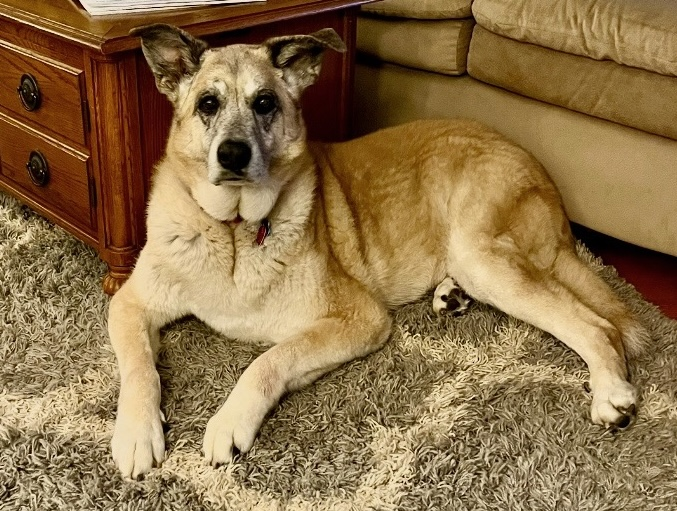

This is Bo! He is the great age of 14 years old and he still has some spring in his step. Bo has been in my life for over 13 years and I have only a few memories without him there. Bo is very sweet and is no doubt a gentle giant (unless you're a squirrel, then he hates you with the power of 10,000 suns). Though he doesn't do this as much anymore, I remember watching him run all around the backyard whenever he got "The Zoomies". He can also tell time which is a fun fact. Every night we give him a treat at 8 o'clock. And every night at exactly 8 o'clock or a few minutes earlier, Bo would walk up to either Mom or I, get our attention, and herd us towards his treats. He will also definitely let you know that he is most displeased if you're two minutes late. Overall, Bo is a gentle giant and he is an integral part of my family.
 Back to My Pets